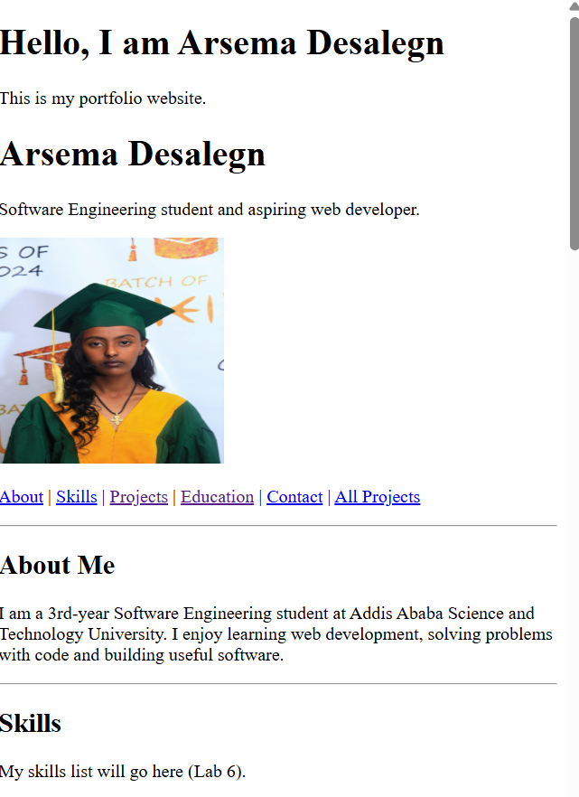
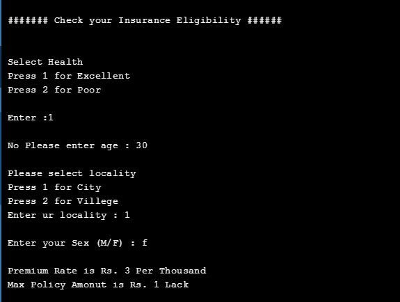
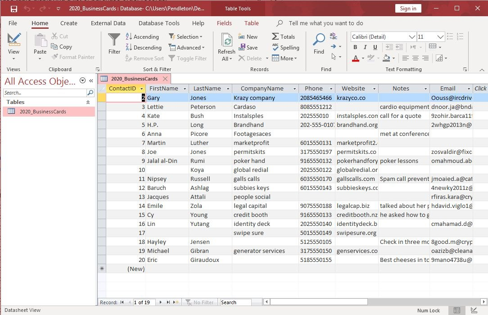

Here are my programming assignments, academic project work, and personal portfolio website.
| Project | Language | Year | Link |
|---|---|---|---|
| Personal Portfolio Website | HTML | 2026 | View Portfolio |
| C++ Programming Assignments | C++ | 2026 | View C++ Project |
| Database Project | Database | 2026 | View Database Project |
| Total projects | 3 | ||
A personal website I developed to introduce myself, present my skills, education, and projects.

Click the screenshot to view the image in its original size.
Programming exercises completed while learning C++ and practicing problem-solving techniques.

Click the screenshot to view the image in its original size.
An academic project related to database concepts, organizing data, and managing information.

Click the screenshot to view the image in its original size.
Visit the Official W3C Website to learn more about web standards.
© 2026 Arsema Desalegn. All rights reserved.